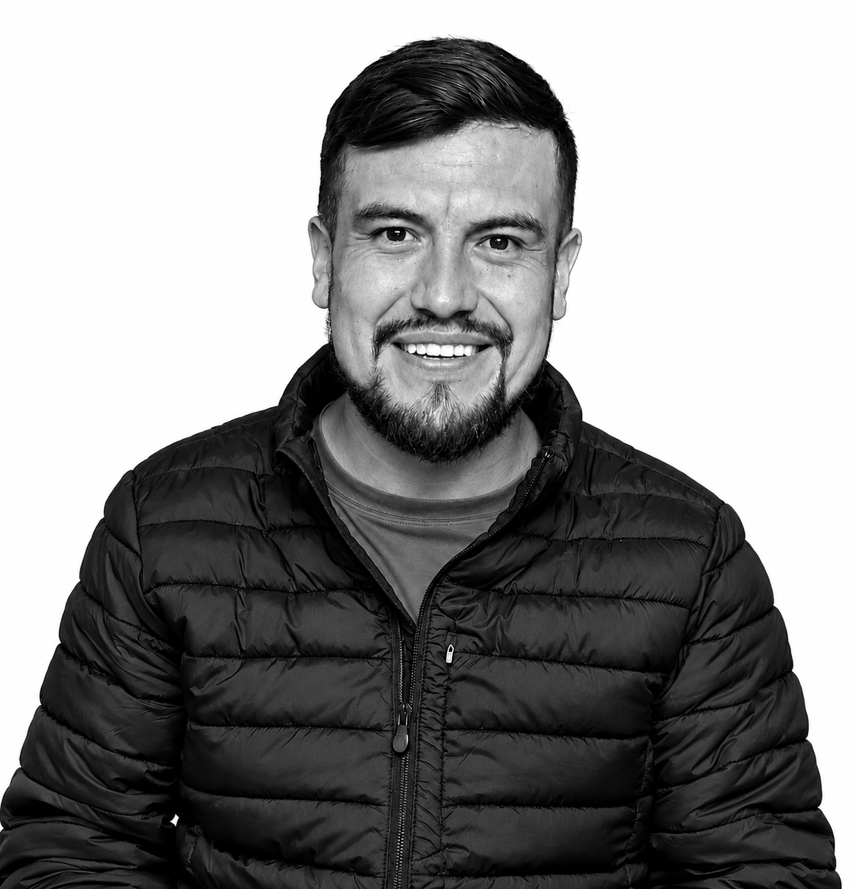
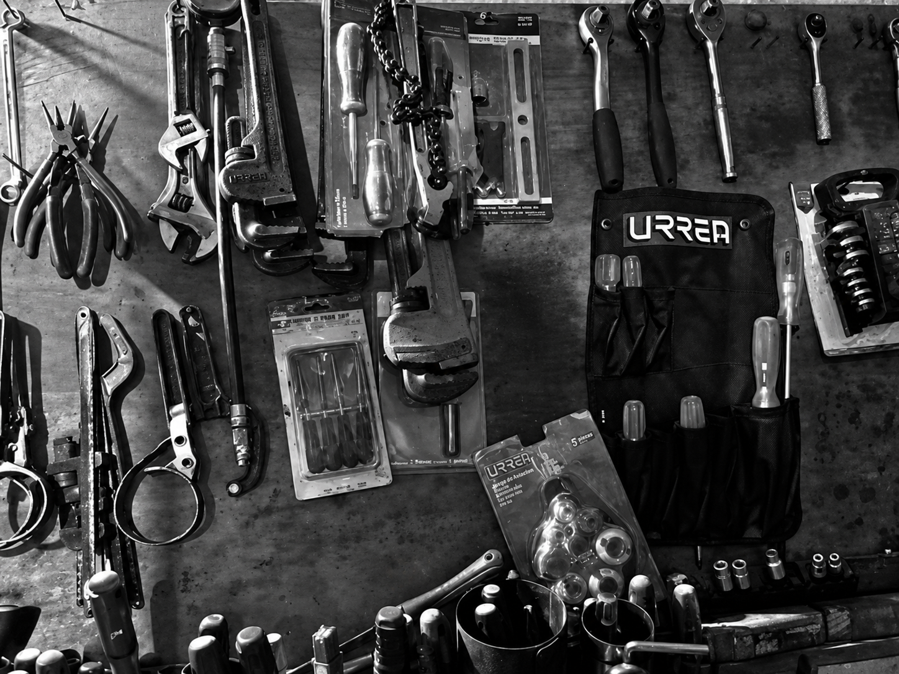

Honestidad
El valor más importante para nosotros. Siempre diremos la verdad sobre lo que necesita tu auto.
Pasión por la mecánica, compromiso con las personas.
En Taller Mecánico EDR, más que reparar autos, nos dedicamos a generar confianza. Sabemos que dejar tu vehículo en manos de alguien más no es fácil, por eso nuestra prioridad es siempre atenderte con honestidad y responsabilidad, como si tu coche fuera el nuestro.
Detrás del nombre EDR hay una historia de esfuerzo y pasión por la mecánica que comenzó hace más de 20 años, con un solo objetivo: ayudar a los demás resolviendo problemas reales con soluciones claras y trabajo bien hecho.

Mi nombre es Eder, soy mecánico automotriz con más de dos décadas de experiencia, desde que era joven mostré interés por la reparación de autos y con el tiempo ese interés se convirtió en un oficio que me ha permitido tener mi propio negocio, prestar servicio a los clientes que lo solicitan y seguir aprendiendo día a día.
“Mi perspectiva ha sido ofrecer a mis clientes un servicio de calidad y garantizado, lo anterior con la finalidad de que estos se conviertan en clientes cautivos los cuales me recomienden con otras personas por el buen servicio que se le otorga.”
El valor más importante para nosotros. Siempre diremos la verdad sobre lo que necesita tu auto.
Respetamos tu tiempo y nuestras fechas de entrega.
Cada reparación se hace con cuidado, usando herramientas y técnicas adecuadas.
No solo arreglamos coches, también atendemos personas.

Estamos para atenderte con honestidad, experiencia y compromiso.
Conoce nuestros servicios